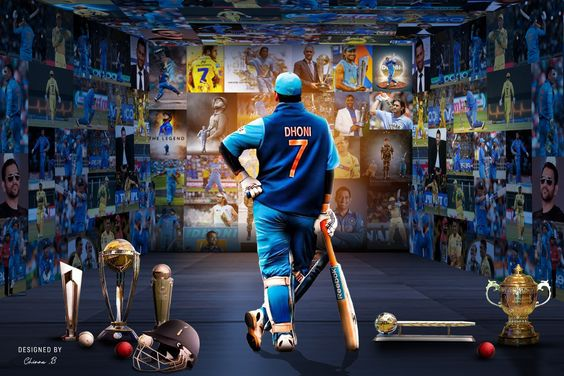

MAHENDRA SINGH DHONI [M.S.D]

-
Early Life and Introduction:
- Mahendra Singh Dhoni was born on July 7, 1981, in Ranchi, Jharkhand, India.
-
He hails from a middle-class Rajput family and was raised in a humble background.
- Dhoni initially had a keen interest in football and badminton but later shifted his focus to cricket.
-
Domestic Career:
- Dhoni made his debut for Bihar in the 1999/2000 Ranji Trophy season.
- He rose through the ranks and caught the attention of selectors with his exceptional batting and wicket-keeping skills.
- In 2004, he was selected to play for the East Zone in the Deodhar Trophy, where he scored a century.
- His consistent performances earned him a place in the India A team and eventually led to his selection in the Indian national team.
-
International Debut and Rise to Prominence:
- Mahendra Singh Dhoni made his international debut in December 2004 in an ODI against Bangladesh.
- He made an immediate impact, scoring 148 runs in just his fifth ODI against Pakistan in 2005.
- Dhoni's unique style of batting, powerful hitting, and calm demeanor quickly made him a fan favorite.
- He became the captain of the Indian cricket team in 2007, leading them to victory in the inaugural ICC World Twenty20 in South Africa.
-
Captaincy and Major Achievements:
- Under Dhoni's captaincy, India achieved remarkable success in international cricket.
- In 2008, he led India to victory in the Commonwealth Bank Series in Australia, where they defeated the hosts in the finals.
- In 2008, he led India to victory in the Commonwealth Bank Series in Australia, where they defeated the hosts in the finals.
- He played a match-winning unbeaten knock of 91 in the final against Sri Lanka and was awarded the Man of the Match.
- In 2013, Dhoni led India to victory in the ICC Champions Trophy in England, becoming the first captain to win all three ICC trophies.
Test Cricket and Legacy:
- Dhoni also had a successful career in Test cricket, leading India to the number one ranking in the ICC Test Team Rankings.
- He is known for his calm captaincy and ability to handle pressure situations.
- Dhoni retired from Test cricket in 2014 after playing 90 matches, scoring over 4,800 runs, and effecting 256 dismissals as a wicket-keeper.
- He continued to play limited-overs cricket and led India to the semifinals of the 2015 ICC Cricket World Cup and the 2016 ICC World Twenty20.
Indian Premier League (IPL) Career:
- Dhoni has been a key figure in the Indian Premier League (IPL) as the captain of the Chennai Super Kings (CSK) franchise since the league's inception in 2008.
- CSK won the IPL title under his leadership in 2010, 2011, and 2018 , 2021 , 2023.
- Dhoni is known for his astute captaincy and finishing abilities in the T20 format.
-
Awards and Recognitions:
- Mahendra Singh Dhoni has received numerous awards and accolades throughout his career.
- He was honored with the Rajiv Gandhi Khel Ratna, India's highest sporting honor, in 2007.
- He was named the ICC ODI Player of the Year in 2008 and 2009.
- In 2020, Dhoni was awarded the Padma Bhushan, the third-highest civilian award in India.
Retirement and Beyond: